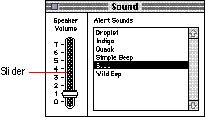
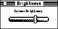
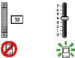

|
SlidersA slider (sometimes called a dial) displays the range of values, magnitude, or position of something in the application or system. An indicator notes the current setting. Some sliders allow users to alter the value of the slider by moving the indicator up and down. Sliders can be analog or digital devices that display their values graphically. Figure 7-13 shows an example of a slider.Figure 7-13 An example of a slider  You can design and implement your own sliders as necessary for your application. When you design your sliders, be sure to include meaningful labels that indicate to users the range and direction of the slider. For instance, the Speaker Volume slider in the Sound control panel has numbers from 0 to 7 to indicate the loudness of the sound. It would be much clearer to users if the slider also had labels that stated the loudness in relative terms. The bottom could be labeled Flash Menu Bar. This type of labeling substantially improves the comprehensibility of the graphical interface. Give users clues about the direction in which the indicator moves and how that relates to the control. For instance, most people assume that moving an indicator up a vertical slider means increasing the value of the setting. However, this assumption could be clarified easily with graphics or words. Figure 7-14 shows an example of a slider with graphical symbols that demonstrate to users which direction to move the indicator to increase or decrease brightness on a monitor. Figure 7-14 A slider with direction information  Make sure that you don't use a scroll bar when you really mean to use a slider. Use scroll bars only for representing the relative position of the visible portion of a document and in scrolling lists. Typically a scroll bar represents the amount of data in a document, and the scroll box represents the relative position of the window over the length of the document. Using a scroll box to change a setting confuses the meaning of the element and makes the interface inconsistent. Scroll bars are described in detail in the section "Scroll Bars," which begins on page 151 in Chapter 5, "Windows." Figure 7-15 shows a scroll bar used incorrectly and a slider used correctly in a similar situation. Figure 7-15 Incorrect use of a scroll bar and correct use of a slider  |